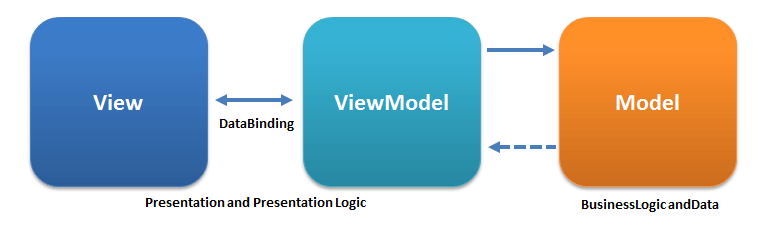
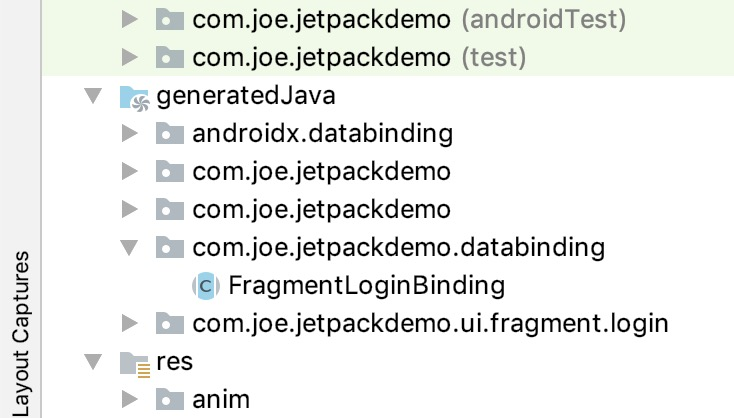
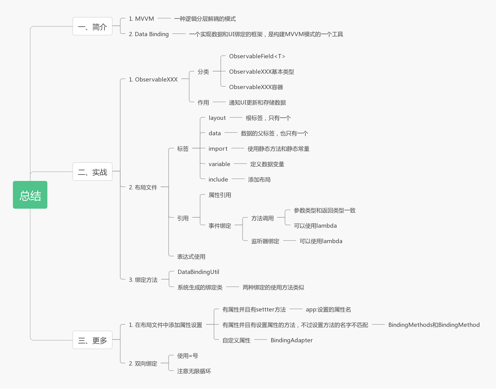

介绍
MVVM 介绍
MVVM（全称 Model-View-ViewModel）同 MVC 和 MVP 一样，是逻辑分层解偶的模式（如果你还不了解 MVC 和 MVP，建议还是提前了解一下）。
结构图：

从上图我们可以了解到MVVM的三要素，他们分别是：
- View 层：xml、Activity、Fragment、Adapter 和 View 等
- Model 层：数据源（本地数据和网络数据等）
- ViewModel 层：View 层处理数据以及逻辑处理
Data Binding 介绍
Data Binding 不算特别新的东西，2015 年 Google 就推出了，但即便是现在，很多人都没有学习过它，我就是这些工程师中的一位，因为我觉得 MVP 已经足够帮我处理日常的业务，Android Jetpack 的出现，是我研究 Data Binding 的一个契机。
在进行下文之前，我有必要声明一下，MVVM 和 Data Binding 是两个不同的概念，MVVM 是一种架构模式，而 Data Binding 是一个实现数据和UI绑定的框架，是构建MVVM模式的一个工具。
学习姿势：
我依然认为官方文档是最好的学习途径：
官方文档：Data Binding Library
谷歌实验室：官方教程
官方Demo地址：https://github.com/googlecodelabs/android-databinding
实战
在这里，我打算先在上一节 Android-Jetpack组件：Navigation 的基础代码上进行拓展（如有涉及到 Navigation 的代码，我会注明），本文会在登录和注册模块的基础上进行讲解，后期如有需要，会拓展到其他模块。
第一步 在 app 模块下的 build.gradle 文件添加内容
1 | android { |
第二步 构建 LoginModel
创建登录的 LoginModel，LoginModel 主要负责登录逻辑的处理以及两个输入框内容改变的时候数据更新的处理：
1 | class LoginModel constructor(name: String, pwd: String, context: Context) { |
我相信同学们可能会对 ObservableField 存在疑惑，那么 ObservableField 是什么呢？它其实是一个可观察的域，通过泛型来使用，可以使用的方法也就三个：
| 方法 | 作用 |
|---|---|
| ObservableField(T value) | 构造函数，设置可观察的域 |
| T get() | 获取可观察的域的内容，可以使用UI控件监测它的值 |
| set(T value) | 设置可观察的域，设置成功之后，会通知UI控件进行更新 |
不过，除了使用 ObservableField 之外，Data Binding 为我们提供了基本类型的 ObservableXXX(如ObservableInt)和存放容器的 ObservableXXX(如ObservableList
我们再回头看看 LoginModel 这个类，它其实只有分别用来观察 name 和 pwd 的成员变量 n 和 p ，外加一个处理登录逻辑的方法，非常简单。
第三步 创建布局文件
引入 Data Binding 之后的布局文件的使用方式会和以前的布局使用方式有很大的不同，且听我一一解释：
| 标签名 | 作用 |
|---|---|
| layout | 用作布局的根节点，只能包裹一个 View 标签，且不能包裹 merge 标签。 |
| data | Data Binding 的数据，只能存在一个 data 标签。 |
| variable | data 中使用，数据的变量标签，type 属性指明变量的类，如 com.joe.jetpackdemo.viewmodel.LoginModel。name 属性指明变量的名字，方便布局中使用。 |
| import | data 中使用，需要使用静态方法和静态常量，如需要使用 View.Visble 属性的时候，则需导入 |
| include | View 标签中使用，作用同普通布局中的 include 一样，需要使用 bind:<参数名>传递参数。 |
我们再看一下LoginFragment下的 fragment_login.xml 布局文件：
1 | <?xml version="1.0" encoding="utf-8"?> |
variable 有两个:
- model：类型为
com.joe.jetpackdemo.viewmodel.LoginModel，绑定用户名详见et_accountEditText中的android:text="@{model.n.get()}“，当EditText输入框内容变化的时候有如下处理android:onTextChanged="@{(text, start, before, count)->model.onNameChanged(text)}“，以及登录按钮处理android:onClick="@{() -> model.login()}“。 - activity：类型为
androidx.fragment.app.FragmentActivity，主要用来返回按钮的事件处理，详见txt_cancelTextView的android:onClick="@{()-> activity.onBackPressed()}“。
对于以上的内容，我仍然有知识点需要讲解：
1. 属性的引用
如果想使用 ViewModel 中成员变量，如直接使用 model.p。
2. 事件绑定
事件绑定包括方法引用和监听绑定：
- 方法引用：参数类型和返回类型要一致，参考
et_pwdEditText的android:onTextChanged引用。 - 监听绑定：相比较于方法引用，监听绑定的要求就没那么高了，我们可以使用自行定义的函数，参考
et_accountEditText的android:onTextChanged引用。
3. 表达式
如果你注意到了 btn_loginButton 在密码没有内容的时候是灰色的，是因为它在 android:enabled 使用了表达式：@{(model.p.get().isEmpty()||model.n.get().isEmpty()) ? false : true}，它的意思是用户名和密码为空的时候登录的 enable 属性为 false，这是普通的三元表达式，除了上述的 || 和三元表达式之外，Data Binding 还支持：
- 运算符 + - / * %
- 字符串连接 +
- 逻辑与或 && ||
- 二进制 & | ^
- 一元 + - ! ~
- 移位 >> >>> <<
- 比较 == > < >= <= (Note that < needs to be escaped as <)
- instanceof
- Grouping ()
- Literals - character, String, numeric, null
- Cast
- 方法调用
- 域访问
- 数组访问
- 三元操作符
除了上述之外，Data Binding 新增了空合并操作符 ??，例如 android:text="@{user.displayName ?? user.lastName}“，它等价于 android:text="@{user.displayName != null ? user.displayName : user.lastName}“。
第四步 生成绑定类
我们的布局文件创建完毕之后，点击 Build 下面的 Make Project，让系统帮我生成绑定类，生成绑定的类如下：

下面我们只需在 LoginFragment 完成绑定即可，绑定操作既可以使用上述生成的 FragmentLoginBinding 也可以使用自带的 DataBindingUtil 完成：
1. 使用 DataBindingUtil
我们可以看一下 DataBindingUtil 的一些常用 Api：
| 函数名 | 作用 |
|---|---|
| setContentView | 用来进行 Activity 下面的绑定 |
| inflate | 用来进行 Fragment 下面的绑定 |
| bind | 用来进行 View 的绑定 |
LoginFragment 绑定代码如下：
1 | override fun onCreateView( |
2. 使用生成的 FragmentLoginBinding
使用方法与第一种类似，仅需将生成方式改成 val binding = FragmentLoginBinding.inflate( inflater , container , false ) 即可
运行一下代码，开始图的效果就出现了。
更多
Data Binding 还有一些有趣的功能，为了让同学们了解到更多的知识，我们在这里有必要探讨一下：
布局中属性的设置
1. 有属性有 setter 的情况
如果 XXXView 类有成员变量 borderColor，并且 XXXView 类有 setBoderColor(int color) 方法，那么在布局中我们就可以借助 Data Binding 直接使用 app:borderColor 这个属性，不太明白？没关系，以 DrawerLayout 为例，DrawerLayout 没有声明 app:scrimColor、app:drawerListener，但是 DrawerLayout 有 mScrimColor:int、mListener:DrawerListener 这两个成员变量并且具有这两个属性的 setter 的方法，他就可以直接使用 app:scrimColor、app:drawerListener 这两个属性，代码如下：
1 | <android.support.v4.widget.DrawerLayout |
2. 没有setter但是有相关方法
还用 XXXView 为例，它有成员变量 borderColor，这次设置 borderColor 的方法是 setBColor(总有程序员乱写方法名~)，强行用 app:borderColor 显然是行不通的，可以这样用的前提是必须有 setBoderColor(int color) 方法，显然 setBColor 不匹配，但我们可以通过 BindingMethods 注解实现 app:borderColor 的使用，代码如下：
1 | @BindingMethods(value = [BindingMethod(type = 包名.XXXView::class, attribute = "app:borderColor", method = "setBColor")]) |
3. 自定义属性
这次不仅没 setter 方法，甚至连成员变量都需要自带（条件越来越刻苦~），这次我们的目标就是给 EditText 添加文本监听器，先在 LoginModel 中自定义一个监听器并使用 @BindingAdapter 注解：
1 | // SimpleWatcher 是简化了的TextWatcher |
这样我们就可以在布局文件中对 EditText 愉快的使用 app:addTextChangedListener 属性了：
1 | <EditText |
效果与我们之前使用的时候一样。
双向绑定
使用双向绑定可以简化我们的代码，比如我们上面的 EditText 在实现双向绑定之后既不需要添加 SimpleWatcher 也不需要用方法调用，怎么实现呢？代码如下：
1 | <EditText |
仅仅在将 @{model.n.get()} 替换为 @={model.n.get()} ，多了一个 = 号而已，需要注意的是，属性必须是可观察的，可以使用上面提到的 ObservableField，也可以自定义实现 BaseObservable 接口，双向绑定的时候需要注意无限循环，更多关于双向绑定还请查看官方文档。
总结
